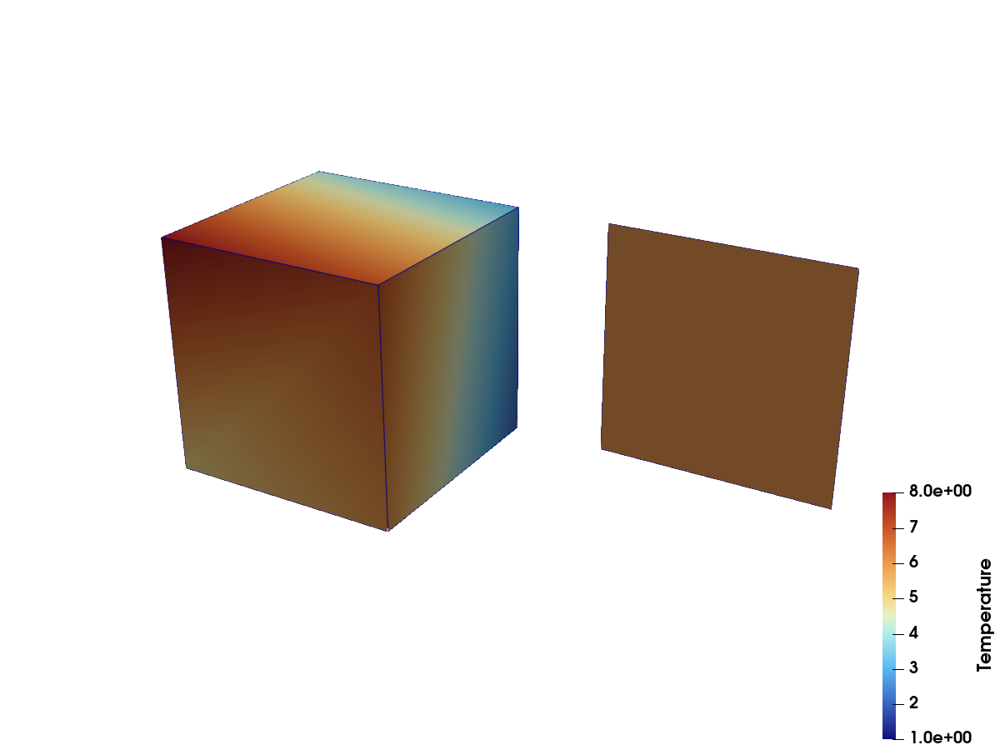

PartitionedDataSetCollection: blocks and assembly
Port of the composite.hdf example from the VTKHDF specification: a collection holding a PolyData block and an UnstructuredGrid block, plus an Assembly hierarchy grouping them. Blocks are written with the same API as standalone files. Assembly references are HDF5 soft links, so a block may appear under several nodes. vtkhdf_multiblock writes a MultiBlockDataSet the same way.
What you'll learn: how to create named blocks, organize block references in an assembly tree, and read both structures back.
The two blocks in ParaView: Solid colored by Temperature, and the Surface square moved aside. In the file the square sits on a face of the cube; the translation is a display transform, made only for the screenshot.


using VTKHDFsquare = Float32[ 0 1 1 0 0 0 1 1 0 0 0 0]quad = [MeshCell(PolyData.Polys(), [1, 2, 3, 4])];cube = Float64[ 0 1 1 0 0 1 1 0 0 0 1 1 0 0 1 1 0 0 0 0 1 1 1 1]hex = [MeshCell(VTKCellTypes.VTK_HEXAHEDRON, 1:8)];vtkhdf_collection("composite") do col surface = vtkhdf_grid(col, "Surface", square, quad) surface["Materials", VTKCellData()] = [1] solid = vtkhdf_grid(col, "Solid", cube, hex) solid["Temperature"] = Float64.(1:8) add_block_ref(col, surface) solids = add_node(col, "solids") add_block_ref(solids, solid) both = add_node(col, "everything") add_block_ref(both, surface) add_block_ref(both, solid)endReading it back
Blocks of a composite file are readers themselves:
col = vtkhdf_open("composite")keys(col)2-element Vector{String}:
"Surface"
"Solid"col["Solid"]["Temperature"]8-element Vector{Float64}:
1.0
2.0
3.0
4.0
5.0
6.0
7.0
8.0The assembly hierarchy comes back as a tree of node names and block references:
asm = VTKHDF.read_assembly(col)[(n.name, n.blocks) for n in asm.children]2-element Vector{Tuple{String, Vector{String}}}:
("solids", ["Solid"])
("everything", ["Surface", "Solid"])close(col)